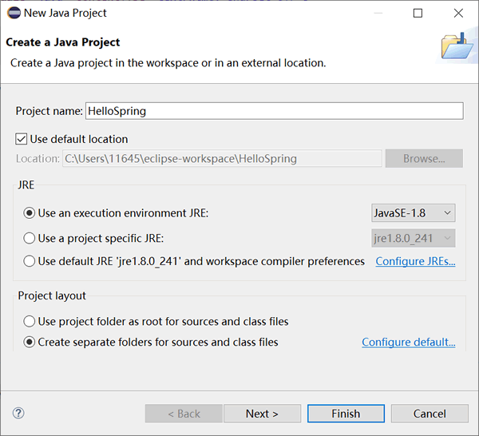
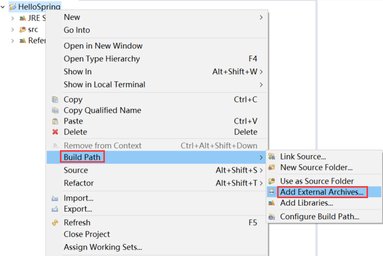

第一个Spring程序
本节介绍如何使用 Eclipse IDE 创建一个简单的 Spring 程序。在编写之前，我们必须确保已经正确搭建了 Spring 开发环境，不了解的读者请转到：Spring开发环境搭建
1. 鼠标右键点击 HelloSpring 项目，然后在弹出的菜单中选择 Build Path -> Add external archives，选择 Spring 的 jar 包。
2. 这里我们可以先把 Spring 基础 Jar 包以及 Commons-loggin 导入到项目中，若后续功能增加，则根据需要再导入 Spring 的其他 Jar。
当然，我们也可以直接将所有的 Spring Jar 包都一次性导入到项目中。
1. HelloWorld.java 类的代码如下。
关于以上代码，需要注意以下两点：
我们也可以将该配置文件命名为其它有效的名称，但需要注意的是，该文件名必须与 MainApp.java 中读取的配置文件名称一致。
Beans.xml 用于给不同的 Bean 分配唯一的 ID，并给相应的 Bean 属性赋值。例如，在以上代码中，我们可以在不影响其它类的情况下，给 message 变量赋值。
1. 创建 Java 项目
在 Eclipse 中创建一个简单的 Java 项目，依次单击 File -> New -> Java Project，这里将项目名称设置为 HelloSpring。

图1：创建 Java 项目
2. 添加 jar 包
这里我们需要在项目中添加 Spring 和 logging 的 jar 包，操作步骤如下。1. 鼠标右键点击 HelloSpring 项目，然后在弹出的菜单中选择 Build Path -> Add external archives，选择 Spring 的 jar 包。

图2：Build Path
图2：Build Path
2. 这里我们可以先把 Spring 基础 Jar 包以及 Commons-loggin 导入到项目中，若后续功能增加，则根据需要再导入 Spring 的其他 Jar。
- org.springframework.core-5.3.13.jar
- org.springframework.beans-5.3.13.jar
- spring-context-5.3.13.jar
- spring-expression-5.3.13.jar
- commons.logging-1.2.jar
当然，我们也可以直接将所有的 Spring Jar 包都一次性导入到项目中。
3. 创建 Java 类
在 HelloSpring 中创建 net.biancheng.c 包，然后在这个包下创建 HelloWorld.java 和 MainApp.java 类。1. HelloWorld.java 类的代码如下。
package net.biancheng.c;
public class HelloWorld {
private String message;
public void setMessage(String message) {
this.message = message;
}
public void getMessage() {
System.out.println("message : " + message);
}
}
2. MainApp.java 类的代码如下。
package net.biancheng.c;
import org.springframework.context.ApplicationContext;
import org.springframework.context.support.ClassPathXmlApplicationContext;
public class MainApp {
public static void main(String[] args) {
ApplicationContext context = new ClassPathXmlApplicationContext("Beans.xml");
HelloWorld obj = context.getBean("helloWorld",HelloWorld.class);
obj.getMessage();
}
}
关于以上代码，需要注意以下两点：
- 创建 ApplicationContext 对象时使用了 ClassPathXmlApplicationContext 类，这个类用于加载 Spring 配置文件、创建和初始化所有对象（Bean）。
- ApplicationContext.getBean() 方法用来获取 Bean，该方法返回值类型为 Object，通过强制类型转换为 HelloWorld 的实例对象，调用其中的 getMessage() 方法。
4. 创建配置文件
在 src 目录下，创建一个 Spring 配置文件 Beans.xml，内容如下。
<?xml version="1.0" encoding="UTF-8"?>
<beans xmlns="http://www.springframework.org/schema/beans"
xmlns:xsi="http://www.w3.org/2001/XMLSchema-instance"
xsi:schemaLocation="http://www.springframework.org/schema/beans
http://www.springframework.org/schema/beans/spring-beans-3.0.xsd">
<bean id="helloWorld" class="net.biancheng.c.HelloWorld">
<property name="message" value="Hello World!" />
</bean>
</beans>
我们也可以将该配置文件命名为其它有效的名称，但需要注意的是，该文件名必须与 MainApp.java 中读取的配置文件名称一致。
Beans.xml 用于给不同的 Bean 分配唯一的 ID，并给相应的 Bean 属性赋值。例如，在以上代码中，我们可以在不影响其它类的情况下，给 message 变量赋值。
5. 运行程序
运行 MainApp.java，Eclipse IDE 控制台中显示信息如下。message : Hello World!
至此，我们就成功创建了第一个 Spring 应用程序。关注公众号「站长严长生」，在手机上阅读所有教程，随时随地都能学习。内含一款搜索神器，免费下载全网书籍和视频。

微信扫码关注公众号